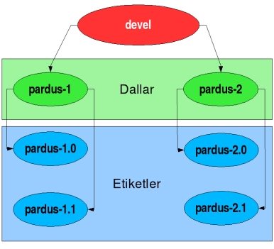

Önceki sayfa Önceki sayfa
|
 Başlangıç Başlangıç
|
Sonraki sayfa
|
Pardus Depo Politikası
T. Barış Metin
Belge Pardus paket depolarını ve bu depolar üzerinde uyulması gereken kuralları listeler.Belge yalnızca bir kullanım alanına yönelik hazırlanan Pardus işletim sistemi dağıtımı için kuralları tarif eder. Farklı kullanım alanlarına yönelik, farklı Pardus dağıtımları (Pardus, Pardus Sunucu, vb.) bulunabilir. Belgede anlatılan kurallar her Pardus dağıtımı için ayrı ayrı uygulanır.
2.1 Kaynak paketler için genel işleyiş
Kaynak paket deposu subversion sürüm kontrol sistemi üzerinde barındırılır. Kararlı sürüm oluşturulacağı zaman geliştirme alanı kararlı bir kaynak sistem oluşturmak için dallandırılır (branch) ve hazırlanan yeni dal üzerinde kararlı dağıtım sürümü için paketler hazırlanır.Kaynak paket deposunun sıradüzeni aşağıdaki gibidir.
- /devel
- /stable
- /stable/pardus-1
- /stable/pardus-2
- ...
- /tags
- /tags/pardus-1.0
- /tags/pardus-1.1
- ...
- /tags/pardus-2.0
- ...

Ana geliştirmenin yapıldığı devel alanı kararlı sürümler için dallandırılır. Kararlı sürüm geliştirmeleri bu dallar üzerinde yapılır. Gerekiyorsa geliştirme alanında yapılan iyileştirmeler, depo ve bileşen sorumlularının kontrolünde kararlı dallara aktarılabilir.
Kararlı sürüm alanlarından oluşturulacak sürümün yayınlanması ile kararlı sürüm etiketlenir ve üzerinde bundan sonra değişiklik yapılmayacak bir etiket oluşturulur.
|
Önceki sayfa
|
Başlangıç
|
Sonraki sayfa
|